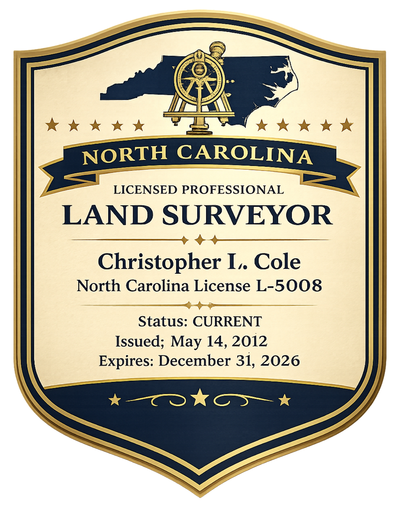
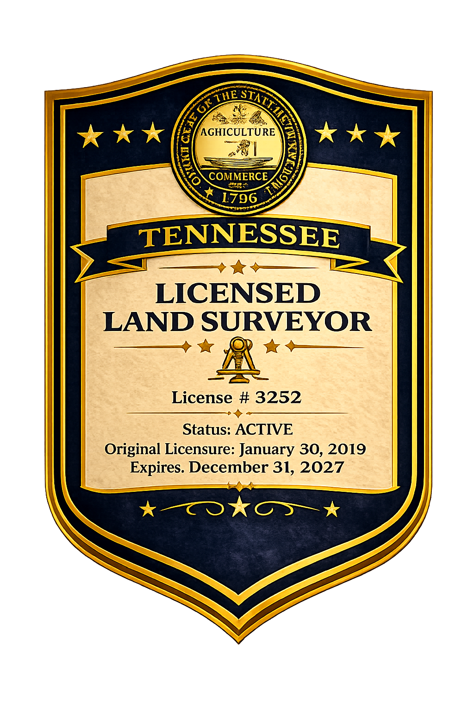
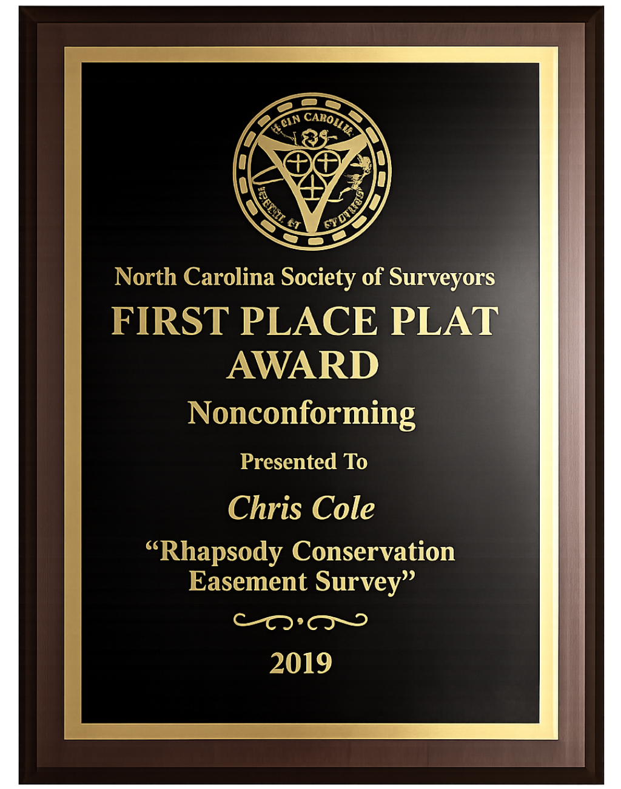
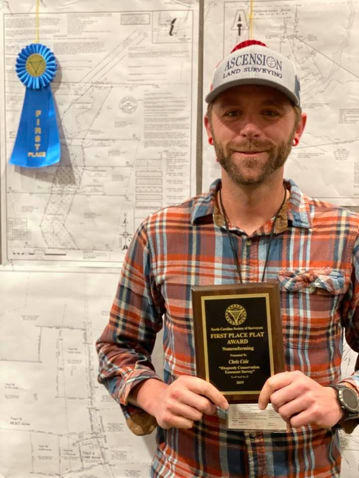

01 — Boundary & ALTA
Traditional Land Surveying
Boundary retracement, ALTA/NSPS surveys, subdivision platting, and easement location using RTK GNSS and conventional total-station methods.
Learn more →Licensed PLS · NC & TN · Est. field work since 2012
Ascension provides licensed land surveying and drone LiDAR mapping for engineers, developers, and contractors across a growing corridor from Nashville, Tennessee to the North Carolina Outer Banks — from staked corners to survey-grade point clouds.
Credentials

License #L-5008, active

License #3252, active
Certified remote pilot

First place, nonconforming survey, 2019
Recognition

NC Society of Surveyors, 2019. "Rhapsody Conservation Easement Survey."

Spring 2021, Issue 21.1 — "More Than Meets the Eye."
What We Do
01 — Boundary & ALTA
Boundary retracement, ALTA/NSPS surveys, subdivision platting, and easement location using RTK GNSS and conventional total-station methods.
Learn more →02 — Aerial
FAA Part 107 drone flights collect dense point-cloud elevation data across wooded or hard-to-reach terrain in a fraction of ground-crew time.
Learn more →03 — Terrain
Digital elevation models and contour mapping built from LiDAR returns, delivered in formats your engineering team already uses.
Learn more →04 — Active Sites
Layout staking, as-built verification, and repeat-flight progress mapping for active construction and land development sites.
Learn more →How a Project Runs
We pull deed history, prior plats, and county GIS data before anyone sets foot on the property, so field time is spent verifying, not searching.
RTK GNSS, total station, and drone LiDAR flights capture boundary evidence and terrain data, matched to the accuracy the project actually requires.
Point clouds are classified, boundary evidence is analyzed against record documents, and the survey is drafted to state minimum standards.
You receive stamped drawings and data in the formats your team needs — PDF, DWG, or point cloud — with plats recorded where required.
Where We Work
Ascension is building out crew coverage from Nashville, Tennessee to the North Carolina Outer Banks — each region below reflects real current coverage, not a page for every town along the way.
Nashville & surrounding counties
Knoxville, Johnson City, Bristol
Winston-Salem, Greensboro — home base
Raleigh, Durham, Chapel Hill
Eastern NC through the Outer Banks
Client Reviews
Responsive, precise, and easy to work with on a tight development timeline. The LiDAR data came back cleaner than we expected for that much tree cover.
Clear communication through the whole boundary survey, and Chris walked us through exactly what the plat showed once it was done.
Used them for construction staking on a multi-phase site. Turnaround was faster than our previous surveyor and the data integrated cleanly into our CAD files.
Replace with live-embedded Google reviews before launch — screenshots don't carry review schema markup or SEO value.